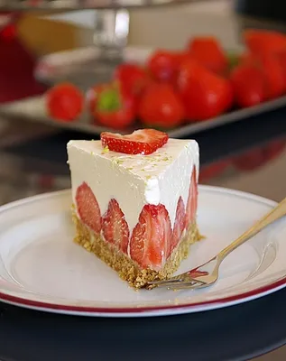

Samljeti kekse i bademe, dodati otopljeni maslac i dobro promiješati. Smjesu utisnuti na dno kalupa i staviti na hlađenje.
Želatinu pomiješati s hladnom vodom i ostaviti da nabubri. U međuvremenu umutiti slatko vrhnje sa šećerom, dodati kiselo vrhnje i limunov sok.
Otopiti želatinu i u tankom mlazu dodavati u smjesu stalno miksajući.
Jagode oprati i posložiti na podlogu. Preliti kremom i posuti koricom limuna ili limete.
Ostaviti u hladnjaku da se stisne prije posluživanja. Po želji ukrasiti voćem ili čokoladom.